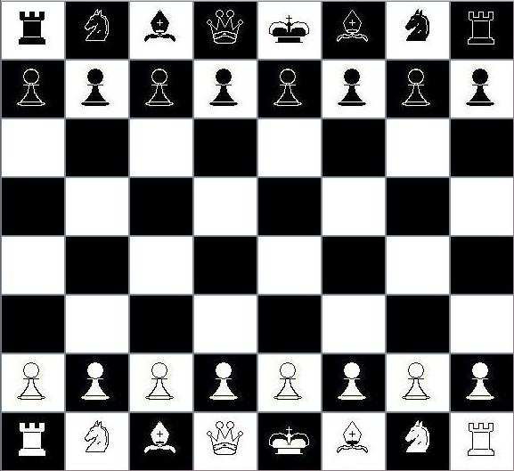
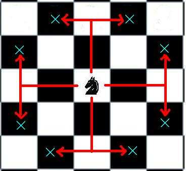
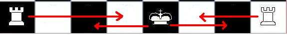
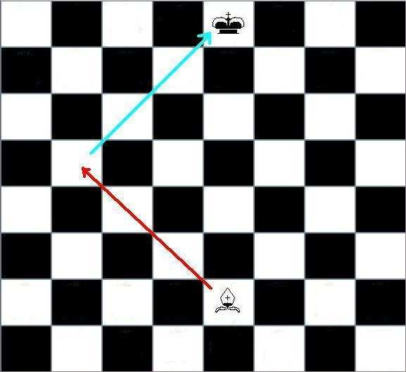
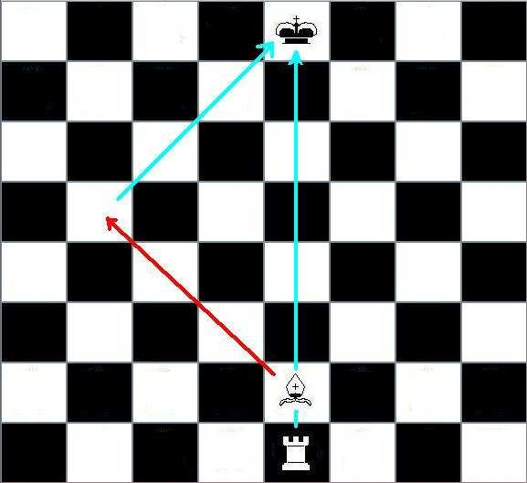

Dos.
Tablero cuadrado 8x8 de 64 casillas con colores alternados (típicamente blanco y negro). Dos sets iguales de 16 piezas cada uno, uno de piezas blancas y otro negras.
Dar jaque mate al Rey contrario.
Por turnos, comenzando por las Blancas, con exactamente un movimiento por turno y con una posición inicial de las piezas fija, hasta que algún jugador consigue el objetivo, se rinde o se produce una situación de empate (tablas). No se puede pasar ni mover más de una vez en ningún caso.
Ambos jugadores están colocados enfrentados y separados por el tablero, que debe colocarse entre ellos de forma que la casilla de la esquina derecha más cercana de cada jugador sea blanca. Cada una de las líneas horizontales se llamarán filas y las verticales columnas.
Las casillas suelen identificarse mediante coordenadas de la siguiente forma: una letra [a..h] para la columna seguido de un número [1..8] para la fila, y tomando como origen la esquina inferior izquierda del jugador con Blancas.
Cada jugador tiene a su disposición un grupo de 16 piezas del mismo color con nombres y características determinadas que representa su ejército. El jugador puede en su turno mover piezas sólo de su ejército atendiendo a las normas legales del movimiento en particular. Además cada pieza tiene la habilidad de capturar piezas enemigas, que son retiradas del tablero.
■1 Rey
■1 Dama
■2 Alfiles
■2 Caballos
■2 Torres
■8 Peones
■Los 8 Peones ocupan las ocho casillas de la segunda fila de cada jugador.
■Las 2 Torres ocupan las esquinas de la primera fila.
■Junto a las Torres se ubican los Caballos y después los Alfiles.
■En las casillas centrales de la primera fila se ubican el Rey y la Dama de forma que el color de la Dama coincida con el de la casilla.
Fig. 1 Posición inicial de las piezas en el tablero.
Todo movimiento que realice un jugador en su turno debe respetar siempre estas máximas, que se consideran prioritarias
■Ninguna pieza puede salir del tablero, ni haber dos en la misma casilla.
■Un jugador no puede capturar piezas de su propio ejército.
■No se puede hacer un movimiento tal que deje al final del turno el propio Rey en jaque, es decir, que el rival pudiera capturarlo en su turno.
Cada tipo de pieza mueve de la siguiente forma (ordenado por sencillez)
Movimiento: todas las casillas que se deseen por la misma fila o columna de la original, con límite el final del tablero o la primera pieza encontrada en el camino. Si la pieza es enemiga, está dentro del rango.
Captura: si una pieza enemiga es alcanzable, se puede capturar colocando la torre en la casilla ocupada por la pieza enemiga y retirando ésta del tablero.
Movimiento: todas las casillas que se deseen por una de las cuatro diagonales que parten de la pieza, hasta el final del tablero o la primera pieza encontrada. Si la pieza es enemiga, está dentro del rango.
Captura: se coloca el Alfil en la casilla ocupada por la pieza rival, y ésta se retira.
Nótese que cada uno de los alfiles comienza en casillas de distinto color, y que no pueden alcanzar las de color contrario.
Movimiento: funciona como una Torre y un Alfil combinados, es decir, en cualquiera de las 8 direcciones posibles todas las casillas deseadas, hasta el final del tablero o la primera pieza encontrada. Si es rival, está dentro del rango.
Captura: se coloca la Dama en la casilla ocupada por la pieza rival retirando ésta del tablero.
Movimiento: funciona como la Dama pero sólo una casilla por vez, es decir, sólo puede desplazarse a casillas adyacentes.
Captura: cualquier pieza enemiga situada en alguna de las 8 casillas adyacentes puede ser capturada, situando el Rey en ella y retirando la pieza enemiga.
Nótese que en particular implica que el Rey no puede desplazarse al lado del otro, pues quedaría a su vez atacado por el rival.
Movimiento: puede moverse a una de las 8 casillas que están ubicadas a una cierta distancia suya, sin importar las piezas que pudieran haber en medio. Cada una de estas casillas destino forman una figura de “L” desde la casilla inicial. Todas ellas son de distinto color de la inicial.
Fig. 2 Casillas destino de un caballo.
Captura: toda pieza enemiga situada en una casilla destino de un Caballo, sin importar las que haya en medio, puede ser capturada desplazándolo allí y retirando la capturada.
Movimiento: hacia delante, en la misma columna, una casilla por vez. Si es la primera vez que ese peón es movido (aún se halla en la segunda fila) puede desplazarse 1 o 2 casillas.
Captura: a diferencia del resto de piezas, no capturan como se mueven. Cada Peón ataca las dos casillas que están en diagonal hacia delante, de forma que al capturar cambian de columna. Cualquier pieza enemiga que se ubique en estas casillas atacadas puede ser capturada.
Además, un Peón dispone de una forma adicional para capturar peones enemigos en una determinada circunstancia (captura al paso). Para ello:
■El peón original debe estar en su quinta fila.
■El peón rival debe estar en su posición inicial en una columna adyacente.
■El rival debe avanzar dos pasos su peón, de modo que ambos peones quedan juntos en la misma fila.
■En ese momento, si el jugador quiere, puede capturar al enemigo como si éste sólo se hubiera movido una casilla, es decir, desplazando el propio en diagonal a la fila siguiente y retirando al capturado. Si decide ignorar la captura en ese turno perderá el derecho a hacerlo.
Es la única captura del juego en la que la pieza que captura no acaba en la casilla de la capturada.
Coronación: cuando un peón llega a la última fila ha de ser cambiado (coronado) por un Caballo, Alfil, Torre o Dama, aunque el jugador ya posea esa pieza. De esta forma se puede incrementar la propia fuerza al poder disponer, por ejemplo, de varias Damas. Esta sustitución está incluida en el mismo turno del peón.
El enroque es la única jugada en la que en el mismo turno se mueven dos piezas propias: el Rey y una Torre. Este movimiento sólo puede hacerlo cada jugador 1 vez en toda la partida, siendo opcional pero cumpliendo una serie de requisitos, uno de ellos que lo imposibilitaría definitivamente y otros sólo temporalmente:
■Debe ser el primer movimiento tanto del Rey como de la Torre a enrocar. Si se mueve el Rey, el enroque queda imposibilitado para el resto de la partida. Si se mueve la Torre, aún es posible usar la otra.
■No debe haber ninguna pieza entre el Rey y la Torre, ni amiga ni contraria.
■El Rey no puede estar en jaque (atacado) en ese momento, ni su casilla destino, ni la intermedia. Otras casillas, como la origen de la Torre, si pueden estarlo.
El movimiento se efectúa en este orden sea cual sea el lado por el que se enroque: primero se desplaza el Rey dos casillas hacia la Torre y después se mueve la Torre a la casilla adyacente al otro lado del Rey.
Fig. 3 Posibles enroques del Blanco
Se dice que un jugador está en jaque cuando su Rey está siendo atacado por una o dos piezas enemigas, y sería posible para el rival el capturarlo al siguiente turno. No es obligatorio anunciar explícitamente el jaque. Siguiendo las normas, el jugador debe actuar en consecuencia de forma que esa situación desaparezca en su turno. Para ello puede:
■Capturar la pieza que ataca, si dispone de alguna pieza que lo haga, y sólo hay una pieza atacando.
■Poner una pieza en el medio a modo de escudo, si la pieza que ataca no es un Caballo y no hay más de una atacando.
■Mover el Rey a una casilla tal que deje de estar en jaque, si hay.
Fig. 4 Ejemplo de jaque con una pieza
Fig. 5 Ejemplo de jaque doble
Cuando se produce un jaque y un jugador no puede ejecutar ningún movimiento que le permita resolver esa situación, ha perdido la partida.
Existen muchas posibilidades de acabar una partida en tablas:
■Un jugador que no está en jaque no puede mover en su turno (ahogado).
■Ambos jugadores han acordado las tablas.
■Se ha producido la repetición de la misma posición 3 veces (no con los mismos movimientos necesariamente, pero sí con las mismas piezas y los mismos posibles movimientos para ambos bandos).
■No existen suficientes piezas por ningún bando para forzar un jaque mate. Si aún queda algún peón, no se aplica. Casos posibles: Rey contra Rey, Rey contra Rey y Caballo o Alfil.
■Se produce una secuencia de 50 jugadas de cada bando seguidas sin captura o movimiento de peón.